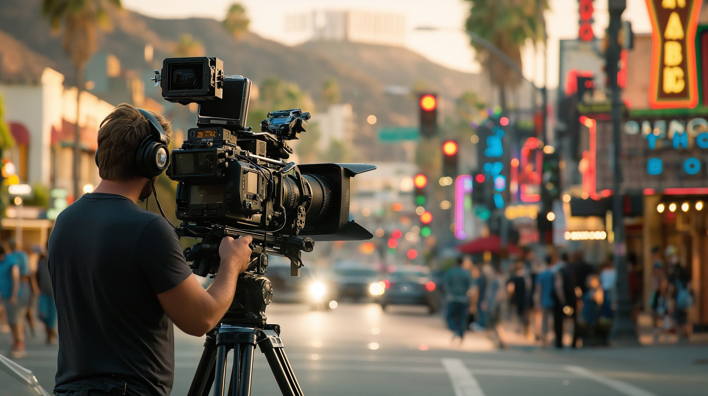
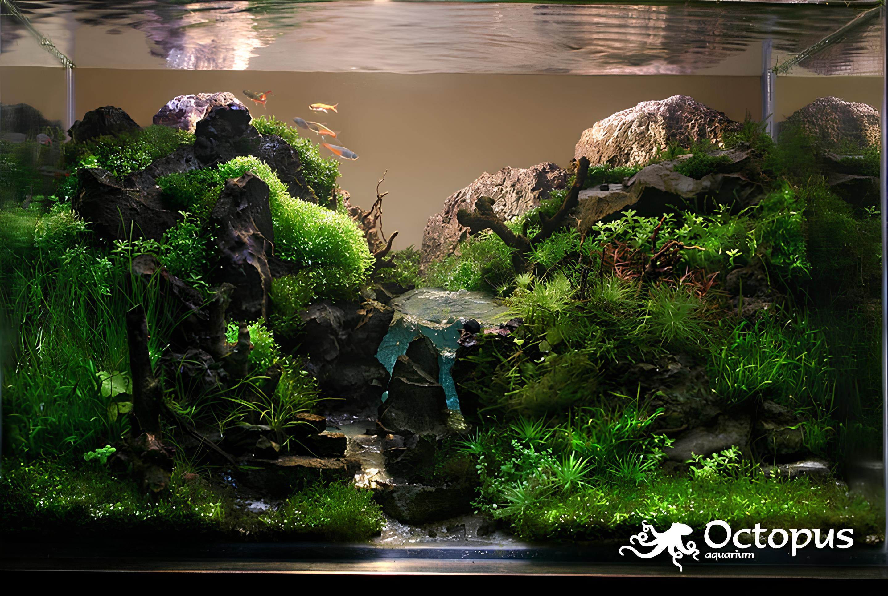
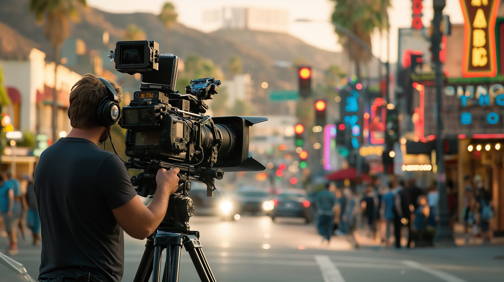
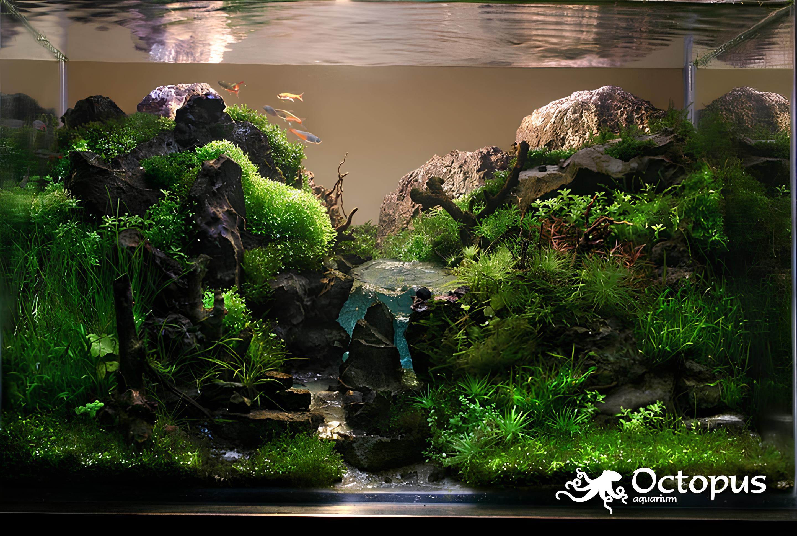
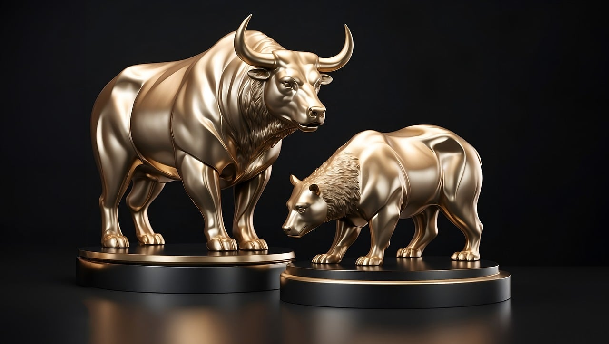
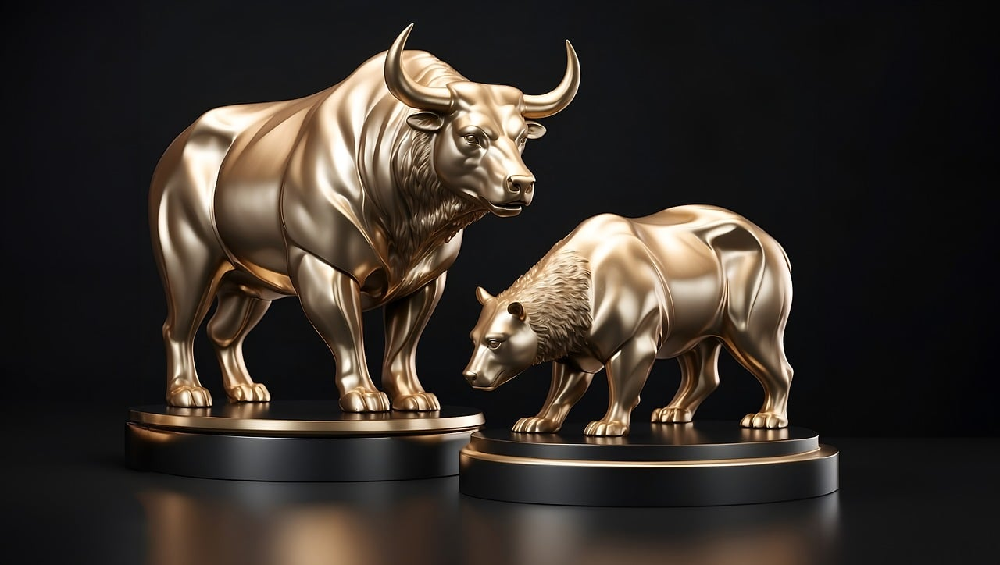

Muhammed Can Özyaşar
Sakarya Üniversitesi Bilgisayar Mühendisliği Öğrencisi
Sakarya Üniversitesi Bilgisayar Mühendisliği Öğrencisi
Merhaba! Ben Muhammed Can Özyaşar, 19 yaşındayım ve Sakarya Üniversitesi Bilgisayar Mühendisliği öğrencisiyim. Yazılım mühendisliği alanında tutkulu bir öğrenciyim ve teknolojinin sunduğu imkanları keşfetmekten büyük keyif alıyorum.
Aynı zamanda, Güzergah Robotics adlı Teknofest takımında aktif olarak yer alıyorum. Takımda, Robot Operating System (ROS) alanında iyileştirmeler yaparak, robotların daha verimli ve akıllı çalışmasını sağlamak için çalışıyorum. Bu projede, yazılım geliştirme, sistem entegrasyonu ve problem çözme yeteneklerimi sürekli olarak geliştiriyorum.
Yazılım alanında kendimi geliştirmek için çeşitli kurslara ve seminerlere katılmaya büyük özen gösteriyorum. Bu projeler, takım çalışması, proje yönetimi ve teknik becerilerimi daha da geliştirmeme yardımcı oldu.
Gelecekte, yazılım mühendisliği ve prompt Engineering alanlarında daha fazla deneyim kazanarak, yenilikçi çözümler üretmeye ve teknoloji dünyasına katkıda bulunmaya devam etmek istiyorum.
Teknoloji dünyasındaki yenilikleri yakından takip etmeye çalışıyorum. Yeni teknolojiler ve trendler beni heyecanlandırıyor.
Akvaryum sanatı, birçok insan için büyüleyici bir hobi olabilir. Ancak benim için bazı dezavantajları dikkat çekiyor:
Maliyet: Akvaryum ekipmanları, balıklar, bitkiler ve diğer malzemeler oldukça pahalı olabiliyor.
Yer Gereksinimi: Büyük ve etkileyici bir akvaryum için yeterli alan bulmak her zaman mümkün olmayabiliyor.
Kısıtlılık: Tatil gibi durumlarda akvaryumu bırakıp gitmek zor olabiliyor.
Sporun sadece fiziksel sağlık için değil, aynı zamanda mental gelişim için de önemli olduğuna inanıyorum.
Film izlemek için vakit ayırmaya özen gösteriyorum, film izlemeyi seviyorum. Farklı türlerdeki filmleri keşfetmek benim için keyifli bir aktivite.
Ekonomi, beni her zaman büyüleyen karmaşık ve dinamik bir alan olmuştur.Ekonomi öğrenmeye başlamamın temel nedeni, para nasıl çalışır ve dünya ekonomisini nasıl etkiler merakımdı.Ekonomi öğrenmenin bir diğer faydası ise bana dünyaya dair daha geniş bir bakış açısı kazandırmış olmasıdır. Ekonomi, sadece para ve finansla ilgili bir alan değildir; aynı zamanda insan davranışları, siyaset ve toplum gibi diğer alanlarla da bağlantılıdır
 





 
